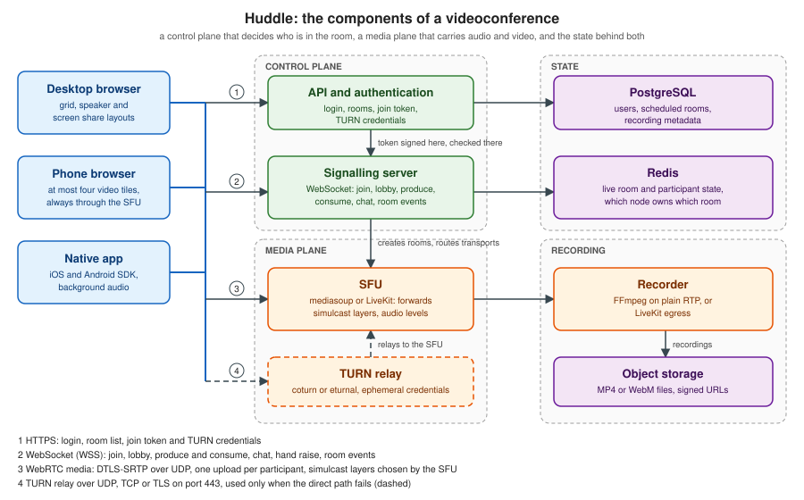

Videoconference Architecture
|
This content was generated with the assistance of AI and should be verified against the official documentation before being relied on in production. |
This page was written on 2026-10-24 (checked on 2026-10-24) against the W3C WebRTC 1.0 Recommendation with JSEP in RFC 9429,
mediasoup 3.31.0 with mediasoup-client 3.25.3, LiveKit server 1.13.10 with livekit-client 2.23.0 and
livekit-server-sdk 2.19.2, and the docker-jitsi-meet release stable-11248-2 (Jitsi Videobridge 2.3.318). The three
TypeScript modules in it (the room state machine, the join token and the layout planner) were run on Node.js 24.21.0 and
their output is printed after each one.
A videoconference looks like one product, but it is at least four systems that must agree about who is in the room. A control plane authenticates people and decides who may join. A signalling channel carries the messages that set up and change calls. A media plane (the SFU) carries audio and video. A state store remembers rooms and participants. Behind them sit a TURN relay for networks that block direct paths, a recorder and a chat channel. This page shows how those parts fit together in Huddle, the videoconference of this section, and walks through the decisions that shape the design: the room and participant state machines, the joining flow, layouts and active-speaker selection, bandwidth adaptation, mobile constraints, and the choice between building on an SFU, embedding Jitsi Meet and renting LiveKit Cloud. The code of the application itself is on Building a Videoconference App.
Which scenarios use it
-
Huddle (videoconference) is the subject of this page.
-
Chatterbox (chat) shares part of the design: rooms, membership, roles and moderation work the same way, and Huddle’s in-call chat can reuse the Chatterbox wire protocol from Message Design and Serialization. The chat-only architecture is on Chat Architecture.
-
Pixel Arena (game) shares only the signalling and room-lifecycle ideas. Its state is a simulation, not a call; see Multiplayer Game Architecture.
The components
The figure shows Huddle with every part that a production videoconference needs. Solid arrows are request or media paths, the dashed arrow is the relayed media path used only when a direct path fails.

| Component | Responsibility | Huddle implementation |
|---|---|---|
API and authentication |
Logs the user in, creates and lists rooms, decides who may join and in which role, signs the join token, hands out short-lived TURN credentials and receives webhooks. |
A small HTTP service. The token and TURN endpoints are shown in ICE, STUN and TURN and in the join-token example below. |
Signalling server |
Holds one WebSocket per participant, enforces the room state machine, relays offers, answers and ICE candidates in mesh mode, and drives the SFU in SFU mode. Also carries room events: joined, left, muted, raised hand, lobby knocks. |
A Node.js WebSocket server, see Signaling and Perfect Negotiation and The WebSocket Protocol. |
SFU |
Receives one copy of each participant’s audio and video and forwards selected layers to every subscriber without decoding. Reports audio levels for speaker detection. See Topologies: Mesh, SFU and MCU. |
mediasoup, a library embedded in the signalling process (mediasoup), or LiveKit as a separate server (LiveKit). |
TURN |
Relays media when the participants' networks do not allow a direct path, which includes the SFU path for users behind strict firewalls. |
coturn or eturnal with ephemeral credentials, on UDP 3478 and TLS 443 (ICE, STUN and TURN). |
Recording |
Receives a copy of the tracks, mixes or stores them and publishes a file. |
FFmpeg fed from an SFU plain-RTP transport, or LiveKit egress (Recording and Media Processing). |
Chat and reactions |
Text messages, emoji reactions, hand raise. |
A WebRTC data channel through the SFU, or messages on the signalling socket, using the Chatterbox envelope. |
State store |
Live room and participant state, which node owns which room. Also the durable records: users, scheduled rooms, recording metadata. |
Redis for live state, PostgreSQL for durable data. |
The two planes fail differently, and that is the main reason to keep them separate. A signalling outage is survivable for a call in progress: media keeps flowing, because it runs over its own DTLS-SRTP transport, and only joins, mutes and layout changes stop working until the socket reconnects (see Connection Lifecycle, Heartbeats and Reconnection). An SFU outage ends every call on that node at once, which is why SFU nodes are the part that needs capacity planning and health checks, covered on Scaling WebRTC and TURN.
Topology per room
Huddle does not use one media topology for everything. The signalling server picks a mode when a room is created and re-evaluates it when the membership or the settings change: a mesh for one or two people and up to four when nobody is recording and every uplink is good, the SFU otherwise, and always the SFU for phones, because every extra upload in a mesh costs battery. The rule and its thresholds are in Topologies: Mesh, SFU and MCU. Switching from mesh to SFU when a fifth person joins means renegotiating every connection, so a room that is expected to grow starts on the SFU.
What the SFU does and does not do
Media is always encrypted, because DTLS-SRTP is mandatory in WebRTC, but through an SFU the encryption is hop by hop: the SFU terminates DTLS-SRTP for each participant, reads the RTP headers (it must, to forward the right layer and to measure audio levels) and re-encrypts for each subscriber. A compromised or curious SFU operator can therefore read the media. End-to-end encryption through an SFU needs encoded transforms and SFrame (RFC 9605) with key management, and is described on End-to-End Encryption. This matters for the decision at the end of this page, because a hosted service is a party that terminates your media unless you add that layer.
Room and participant state
A room is a short-lived object with a clear life cycle, and the participants inside it have their own. Writing both as explicit state machines is the cheapest way to avoid the bugs that dominate videoconference code: a guest who joins a closed room, a participant who is admitted twice, a "left" event that arrives before the "joined" event, a room that never closes because one ghost participant remains.
The states carry decisions:
-
waiting is the lobby. A waiting participant has no token and no media. Only a host can move it on. The lobby must be enforced on the server: a client-side "waiting" screen over a token that was already issued is not a lobby.
-
admitted means "may connect", not "is connected". The token is issued here and expires if it is not used.
-
reconnecting exists because networks drop. Without it a Wi-Fi blip removes the participant from everyone’s screen and makes them rejoin from scratch. The grace period (15 seconds in the example) is long enough for a mobile handover and short enough that a participant who closed the laptop does not linger.
-
draining exists so that "end meeting for all" cannot race with a join: new joins are refused while the room empties.
A pure reducer that takes the room and an event and returns a list of effects (tokens to issue, notifications to send, media to close) keeps the state machine testable without sockets. The signalling server feeds it WebSocket messages and timer ticks, and performs the effects.
Example 1: the Huddle room and participant state machine
// huddle-room-state.ts: the room and participant state machines of the Huddle signalling server.
// Runs on Node.js 24 as it is (type stripping): node huddle-room-state.ts
export type RoomState = 'idle' | 'active' | 'draining' | 'closed';
export type ParticipantState = 'waiting' | 'admitted' | 'connecting' | 'connected' | 'reconnecting' | 'left';
export type Role = 'host' | 'guest';
export interface Participant {
id: string;
name: string;
role: Role;
state: ParticipantState;
muted: boolean;
cameraOff: boolean;
sharing: boolean;
reconnectDeadline: number | null;
}
export interface Room {
name: string;
state: RoomState;
lobbyEnabled: boolean;
maxParticipants: number;
participants: Map<string, Participant>;
}
export type Event =
| { type: 'join'; id: string; name: string; role: Role; now: number }
| { type: 'admit'; by: string; id: string }
| { type: 'deny'; by: string; id: string }
| { type: 'transportConnected'; id: string }
| { type: 'transportLost'; id: string; now: number }
| { type: 'leave'; id: string }
| { type: 'tick'; now: number }
| { type: 'mute'; id: string; muted: boolean }
| { type: 'endMeeting'; by: string };
// An effect is a side effect the server must perform; the reducer stays pure and testable.
export type Effect =
| { type: 'notify'; to: string; message: string }
| { type: 'broadcast'; message: string }
| { type: 'issueToken'; to: string }
| { type: 'closeMedia'; id: string }
| { type: 'closeRoom' };
export const RECONNECT_GRACE_MS = 15_000;
export function createRoom(name: string, opts: { lobbyEnabled?: boolean; maxParticipants?: number } = {}): Room {
return {
name,
state: 'idle',
lobbyEnabled: opts.lobbyEnabled ?? false,
maxParticipants: opts.maxParticipants ?? 50,
participants: new Map(),
};
}
function live(room: Room): Participant[] {
return [...room.participants.values()].filter((p) => p.state !== 'left' && p.state !== 'waiting');
}
export function reduce(room: Room, ev: Event): Effect[] {
const fx: Effect[] = [];
const get = (id: string) => room.participants.get(id);
switch (ev.type) {
case 'join': {
if (room.state === 'draining' || room.state === 'closed') {
return [{ type: 'notify', to: ev.id, message: 'room-closed' }];
}
if (live(room).length >= room.maxParticipants) {
return [{ type: 'notify', to: ev.id, message: 'room-full' }];
}
const needsApproval = room.lobbyEnabled && ev.role !== 'host';
room.participants.set(ev.id, {
id: ev.id, name: ev.name, role: ev.role,
state: needsApproval ? 'waiting' : 'admitted',
muted: false, cameraOff: false, sharing: false, reconnectDeadline: null,
});
if (room.state === 'idle') room.state = 'active';
if (needsApproval) {
fx.push({ type: 'notify', to: ev.id, message: 'waiting-for-host' });
for (const h of room.participants.values()) {
if (h.role === 'host' && h.state !== 'left') fx.push({ type: 'notify', to: h.id, message: `knock:${ev.id}` });
}
} else {
fx.push({ type: 'issueToken', to: ev.id });
}
break;
}
case 'admit': case 'deny': {
const by = get(ev.by);
const p = get(ev.id);
if (!by || by.role !== 'host' || !p || p.state !== 'waiting') return [];
if (ev.type === 'admit') {
p.state = 'admitted';
fx.push({ type: 'issueToken', to: p.id });
} else {
p.state = 'left';
fx.push({ type: 'notify', to: p.id, message: 'denied' });
}
break;
}
case 'transportConnected': {
const p = get(ev.id);
if (!p) return [];
const from = p.state;
if (from === 'admitted' || from === 'connecting' || from === 'reconnecting') {
p.state = 'connected';
p.reconnectDeadline = null;
fx.push({ type: 'broadcast', message: from === 'reconnecting' ? `back:${p.id}` : `joined:${p.id}` });
}
break;
}
case 'transportLost': {
const p = get(ev.id);
if (p && p.state === 'connected') {
p.state = 'reconnecting';
p.reconnectDeadline = ev.now + RECONNECT_GRACE_MS;
fx.push({ type: 'broadcast', message: `reconnecting:${p.id}` });
}
break;
}
case 'tick': {
for (const p of room.participants.values()) {
if (p.state === 'reconnecting' && p.reconnectDeadline !== null && ev.now >= p.reconnectDeadline) {
fx.push(...reduce(room, { type: 'leave', id: p.id }));
}
}
break;
}
case 'leave': {
const p = get(ev.id);
if (!p || p.state === 'left') return [];
const wasVisible = p.state !== 'waiting';
p.state = 'left';
fx.push({ type: 'closeMedia', id: p.id });
if (wasVisible) fx.push({ type: 'broadcast', message: `left:${p.id}` });
if (live(room).length === 0 && room.state === 'active') {
room.state = 'idle';
fx.push({ type: 'closeRoom' });
}
break;
}
case 'mute': {
const p = get(ev.id);
if (p && p.state === 'connected') {
p.muted = ev.muted;
fx.push({ type: 'broadcast', message: `${ev.muted ? 'muted' : 'unmuted'}:${p.id}` });
}
break;
}
case 'endMeeting': {
const by = get(ev.by);
if (!by || by.role !== 'host') return [];
room.state = 'draining';
for (const p of live(room)) {
fx.push({ type: 'notify', to: p.id, message: 'meeting-ended' }, ...reduce(room, { type: 'leave', id: p.id }));
}
room.state = 'closed';
fx.push({ type: 'closeRoom' });
break;
}
}
return fx;
}
// Demo: a lobby room, a guest that knocks, a network drop and a host ending the meeting.
if (process.argv[1]?.endsWith('huddle-room-state.ts')) {
const room = createRoom('standup', { lobbyEnabled: true });
const run = (label: string, ev: Event) => {
const fx = reduce(room, ev);
console.log(`${label.padEnd(28)} room=${room.state.padEnd(8)} fx=${fx.map((f) => ('message' in f ? `${f.type}(${f.message})` : f.type === 'issueToken' ? `issueToken(${f.to})` : f.type)).join(', ') || '-'}`);
};
run('host joins', { type: 'join', id: 'ana', name: 'Ana', role: 'host', now: 0 });
run('guest joins (lobby)', { type: 'join', id: 'bob', name: 'Bob', role: 'guest', now: 1 });
run('guest tries to admit self', { type: 'admit', by: 'bob', id: 'bob' });
run('host admits guest', { type: 'admit', by: 'ana', id: 'bob' });
run('host connected', { type: 'transportConnected', id: 'ana' });
run('guest connected', { type: 'transportConnected', id: 'bob' });
run('guest network lost', { type: 'transportLost', id: 'bob', now: 1000 });
run('tick before grace ends', { type: 'tick', now: 10_000 });
run('guest reconnected', { type: 'transportConnected', id: 'bob' });
run('guest lost again', { type: 'transportLost', id: 'bob', now: 20_000 });
run('tick after grace ends', { type: 'tick', now: 36_000 });
run('host ends meeting', { type: 'endMeeting', by: 'ana' });
run('late join', { type: 'join', id: 'cy', name: 'Cy', role: 'guest', now: 40_000 });
}The run printed:
host joins room=active fx=issueToken(ana)
guest joins (lobby) room=active fx=notify(waiting-for-host), notify(knock:bob)
guest tries to admit self room=active fx=-
host admits guest room=active fx=issueToken(bob)
host connected room=active fx=broadcast(joined:ana)
guest connected room=active fx=broadcast(joined:bob)
guest network lost room=active fx=broadcast(reconnecting:bob)
tick before grace ends room=active fx=-
guest reconnected room=active fx=broadcast(back:bob)
guest lost again room=active fx=broadcast(reconnecting:bob)
tick after grace ends room=active fx=closeMedia, broadcast(left:bob)
host ends meeting room=closed fx=notify(meeting-ended), closeMedia, broadcast(left:ana), closeRoom
late join room=closed fx=notify(room-closed)Source: LiveKit docs: Rooms, participants and tracks (the room and participant model that the states mirror)
Where the state lives
The reducer’s room object is the live state, and it lives in memory on the one node that owns the room, because the SFU router for that room is on the same node. Keeping a room on one node is what makes forwarding cheap. A second copy in Redis is useful for three things only: a lookup from room name to the owning node (so that a joiner is routed to the right signalling and SFU instance), the participant list for the lobby and "who is in the meeting" pages, and recovery data (identity, role and last known state) so that a participant who reconnects after a signalling node restart can be put back. Durable records, such as scheduled meetings, owners and recording metadata, belong in PostgreSQL.
Participant identity matters more than it seems. The identity is chosen by the server from the authenticated session (the
sub of the token below), never by the client. A reconnect with the same identity replaces the previous connection of
that identity, which is the behaviour users expect when a tab is reopened, and it needs a rule for what happens to the
older connection (close it with a distinct close code so it does not try to reconnect). Display names are cosmetic and can
repeat.
Room events and the principle of one writer
Every change that other participants must see (joined, left, muted, hand raised, started sharing, recording started) is a server-originated event, broadcast to the room after the server has applied it. Clients ask, the server decides, and everybody renders the same state. A mute that the client applies to its own track and merely announces will drift from reality the first time a message is lost. For permissions that the SFU must also enforce (a participant muted by the host must not be able to publish audio), the signalling server calls the SFU, as the token grants do in LiveKit.
The joining flow
Joining is the most failure-prone minute of a call: the user must be authenticated, the browser must grant camera and microphone, the device must be probed, the lobby may hold the user back, the transports must connect through whatever network the user is on, and then tracks must be published and subscribed. The sequence below is the Huddle flow in SFU mode.
The steps, and what goes wrong in each:
-
Pre-join. The page asks for the microphone and camera before the user is in the room, shows a preview, lets the user pick devices and mute state, and checks the network. The join button is also the user gesture that unlocks audio playback, so remote audio is audible as soon as the call starts. Device labels are empty before permission is granted, and
getUserMedianeeds a secure context; see Media Capture and Devices. A user who denies permission must still be able to join as a viewer. -
Authorization. The API checks that this user may enter this room and in which role. The HTTP request carries the session cookie, so this is ordinary web authorization, using whatever login the product already has. See Authentication and Authorization.
-
Join token. The API signs a token that contains the room, the identity, the role and the permissions, with a short lifetime (ten minutes in the example). The browser cannot set headers on a WebSocket handshake, so the token travels in the first WebSocket message, or in a short-lived one-time ticket in the query string. The token is the only thing the signalling server and the SFU trust, which is why the API can be a separate service.
-
WebSocket connect and verify. The signalling server checks the
Originheader against an allow-list (otherwise a page on another site can open the socket with the visitor’s cookies, a Cross-Site WebSocket Hijacking attack), then verifies the token. -
Lobby. A guest with the lobby enabled receives
waiting-for-host. Hosts are told with aknockevent. The guest receives nothing about the room until admitted. -
Transports. The server returns what the client needs to build its transports (in mediasoup: the router RTP capabilities, ICE and DTLS parameters; in LiveKit the SDK hides this). The flow in detail is on the mediasoup page.
-
Publish and subscribe. The client publishes its tracks, simulcast for the camera, and the server tells it about every existing producer so it can subscribe. Participants who are already in the room get a
newProducerevent for the new ones. Consumers start paused and are resumed when the client is ready, so the first video packets are not lost. -
Joined. Only now does the server broadcast
joined, so that nobody sees an empty tile for a participant whose media is not flowing yet.
A page that is reloaded or loses its network takes the reconnecting path of the state machine: the same token cannot be
reused when it is one-time, so the page asks the API for a fresh one, reconnects the socket and either restarts ICE on the
existing transports (a network change, peer.restartIce() in mesh mode, see
ICE, STUN and TURN) or creates new transports when the server has
dropped them.
Example 2: the Huddle join token
// huddle-join-token.ts: a signed, short-lived join token (HS256 JWT) for Huddle, with no dependencies.
// Run: node huddle-join-token.ts (Node.js 24)
import { createHmac, timingSafeEqual } from 'node:crypto';
export interface Grants {
room: string;
canPublish: boolean;
canSubscribe: boolean;
canPublishData: boolean;
canShareScreen: boolean;
roomAdmin: boolean;
}
export interface JoinClaims extends Grants {
iss: string;
sub: string; // participant identity, taken from the verified session
name: string;
iat: number;
nbf: number;
exp: number;
jti: string;
}
const b64u = (buf: Buffer | string) => Buffer.from(buf).toString('base64url');
const SECRET = process.env.HUDDLE_TOKEN_SECRET ?? 'change-me-example-secret-at-least-32-bytes';
export function sign(claims: JoinClaims, secret = SECRET): string {
const head = b64u(JSON.stringify({ alg: 'HS256', typ: 'JWT' }));
const body = b64u(JSON.stringify(claims));
const mac = createHmac('sha256', secret).update(`${head}.${body}`).digest();
return `${head}.${body}.${b64u(mac)}`;
}
export function mintJoinToken(opts: { identity: string; name: string; room: string; host: boolean; webinarViewer?: boolean; ttlSeconds?: number; now?: number }): string {
const now = Math.floor((opts.now ?? Date.now()) / 1000);
const viewer = opts.webinarViewer === true;
return sign({
iss: 'huddle-api',
sub: opts.identity,
name: opts.name,
iat: now,
nbf: now,
exp: now + (opts.ttlSeconds ?? 600),
jti: crypto.randomUUID(),
room: opts.room,
canPublish: !viewer,
canSubscribe: true,
canPublishData: !viewer,
canShareScreen: !viewer,
roomAdmin: opts.host,
});
}
export type Verdict = { ok: true; claims: JoinClaims } | { ok: false; reason: string };
export function verifyJoinToken(token: string, expectedRoom: string, opts: { now?: number; secret?: string; seen?: Set<string> } = {}): Verdict {
const parts = token.split('.');
if (parts.length !== 3) return { ok: false, reason: 'malformed' };
const [head, body, sig] = parts as [string, string, string];
let header: { alg?: string };
try { header = JSON.parse(Buffer.from(head, 'base64url').toString()); } catch { return { ok: false, reason: 'malformed' }; }
if (header.alg !== 'HS256') return { ok: false, reason: 'unexpected algorithm' }; // never trust the header to choose
const expected = createHmac('sha256', opts.secret ?? SECRET).update(`${head}.${body}`).digest();
const given = Buffer.from(sig, 'base64url');
if (given.length !== expected.length || !timingSafeEqual(given, expected)) return { ok: false, reason: 'bad signature' };
const claims = JSON.parse(Buffer.from(body, 'base64url').toString()) as JoinClaims;
const now = Math.floor((opts.now ?? Date.now()) / 1000);
if (now < claims.nbf) return { ok: false, reason: 'not yet valid' };
if (now >= claims.exp) return { ok: false, reason: 'expired' };
if (claims.room !== expectedRoom) return { ok: false, reason: 'wrong room' };
if (opts.seen) { // optional one-time use: the join endpoint keeps a short-lived set of jti
if (opts.seen.has(claims.jti)) return { ok: false, reason: 'already used' };
opts.seen.add(claims.jti);
}
return { ok: true, claims };
}
if (process.argv[1]?.endsWith('huddle-join-token.ts')) {
const t0 = Date.parse('2026-10-24T10:00:00Z');
const guest = mintJoinToken({ identity: 'u-42', name: 'Bob', room: 'standup', host: false, now: t0 });
const seen = new Set<string>();
const show = (label: string, v: Verdict) => console.log(label.padEnd(26), v.ok ? `ok publish=${v.claims.canPublish} admin=${v.claims.roomAdmin}` : `rejected: ${v.reason}`);
show('fresh guest token', verifyJoinToken(guest, 'standup', { now: t0 + 1000, seen }));
show('same token again', verifyJoinToken(guest, 'standup', { now: t0 + 2000, seen }));
show('after ten minutes', verifyJoinToken(guest, 'standup', { now: t0 + 601_000 }));
show('other room', verifyJoinToken(guest, 'retro', { now: t0 + 1000 }));
const [h, b, s] = guest.split('.') as [string, string, string];
const claims = JSON.parse(Buffer.from(b, 'base64url').toString());
claims.roomAdmin = true;
show('forged admin claim', verifyJoinToken(`${h}.${b64u(JSON.stringify(claims))}.${s}`, 'standup', { now: t0 + 1000 }));
const none = `${b64u('{"alg":"none"}')}.${b}.`;
show('alg none', verifyJoinToken(none, 'standup', { now: t0 + 1000 }));
const viewer = mintJoinToken({ identity: 'v-1', name: 'Viewer', room: 'standup', host: false, webinarViewer: true, now: t0 });
show('webinar viewer', verifyJoinToken(viewer, 'standup', { now: t0 + 1000 }));
}The run printed:
fresh guest token ok publish=true admin=false
same token again rejected: already used
after ten minutes rejected: expired
other room rejected: wrong room
forged admin claim rejected: bad signature
alg none rejected: unexpected algorithm
webinar viewer ok publish=false admin=falseThis module is Huddle’s own token, built on the idea LiveKit uses: a signed JWT with the room name, the identity and a set
of grants, minted by a server that holds the secret. The claim names differ from LiveKit’s (which nests its permissions in
a video object), so use livekit-server-sdk when LiveKit is the SFU and keep this shape for a mediasoup deployment. Four
rules in the code are the ones that matter, whatever library signs the token:
-
the algorithm is fixed by the verifier, never taken from the token header (the
alg: noneand algorithm-confusion attacks); -
the lifetime is short and the token is bound to one room, so a leaked token is of little use;
-
permissions are minted by the API from the user’s role (
canPublish: falsefor webinar viewers), and the SFU or signalling server enforces them; -
the identity (
sub) comes from the authenticated session, so a participant cannot impersonate another.
The secret comes from the environment (HUDDLE_TOKEN_SECRET), and the value in the example is a placeholder.
Layouts and active speaker
The layout is a client-side decision with server-side consequences. Which tiles are visible determines which video streams the client subscribes to, and at which size, so the layout planner is also the bandwidth planner. Huddle uses three layouts:
-
Grid. Every visible participant in an equal cell. The default for up to a handful of people.
-
Speaker. One large tile for the current speaker and a strip of thumbnails. The default for two people and a good choice when the room is large, because the strip can use the smallest simulcast layer.
-
Spotlight. One large tile for a screen share or a pinned participant, with a strip of thumbnails. A screen share always wins the spotlight, and it is subscribed at full resolution because text must stay readable.
Large rooms apply a last-N rule: show video for the N most relevant participants (the speaker, the pinned one, the most recent speakers, then the newest) and receive only audio from the rest. N is smaller on a phone, which has fewer pixels and a weaker decoder.
Active-speaker detection
Browsers put the loudness of each audio packet into an RTP header extension, defined in RFC 6464 as a value from 0 to 127
that stands for 0 to -127 dBov, where 127 is digital silence. An SFU reads it without decoding the audio, which is the
whole point of the extension. mediasoup turns it into events with ActiveSpeakerObserver (a dominant-speaker algorithm,
emitting dominantspeaker) and AudioLevelObserver (volumes for meters); LiveKit emits ActiveSpeakersChanged on the
room. The Huddle server broadcasts the result as an activeSpeaker event. Doing the same on the client from
getStats() audio levels works in mesh mode, where there is no server in the middle.
The raw signal is noisy: a cough, a keyboard or crosstalk would make the large tile jump around. The planner below holds the current speaker for a minimum time (1.5 seconds) before another participant can take over, ignores levels under a threshold, and keeps the last speaker on screen during silence instead of reverting to a default.
Example 3: the Huddle layout and subscription planner
// huddle-layout.ts: speaker selection, layout choice and the per-tile subscription plan of a Huddle client.
// Run: node huddle-layout.ts (Node.js 24)
export type Rid = 'q' | 'h' | 'f';
export const LAYERS: Record<Rid, { width: number; height: number; kbps: number }> = {
q: { width: 320, height: 180, kbps: 150 },
h: { width: 640, height: 360, kbps: 500 },
f: { width: 1280, height: 720, kbps: 1500 },
};
export interface Peer {
id: string;
cameraOn: boolean;
screenShare: boolean;
pinned: boolean;
audioLevel: number; // 0 (silence) to 1 (loud), as in the RTP audio level header extension converted to a linear scale
joinedAt: number;
}
// The RFC 6464 header extension carries the level as 0..127, meaning 0 to -127 dBov (127 is digital silence).
export function linearFromDbov(value: number): number {
return value >= 127 ? 0 : 10 ** (-value / 20);
}
// Active speaker: the loudest peer above a threshold, held for a minimum time so tiles do not flicker.
export class SpeakerTracker {
private current: string | null = null;
private since = 0;
private threshold: number;
private holdMs: number;
constructor(threshold = 0.1, holdMs = 1500) { this.threshold = threshold; this.holdMs = holdMs; }
update(peers: Peer[], now: number): string | null {
const loud = peers.filter((p) => p.audioLevel >= this.threshold).sort((a, b) => b.audioLevel - a.audioLevel)[0];
if (!loud) return this.current; // silence keeps the last speaker on screen
if (this.current === null) { this.current = loud.id; this.since = now; return this.current; }
if (loud.id !== this.current && now - this.since >= this.holdMs) { this.current = loud.id; this.since = now; }
return this.current;
}
}
export type LayoutMode = 'spotlight' | 'speaker' | 'grid';
export interface Viewport { width: number; height: number; mobile: boolean }
export interface Tile { peerId: string; width: number; height: number; video: Rid | 'off'; reason: string }
export interface Plan { mode: LayoutMode; tiles: Tile[]; audioOnly: string[]; estimatedKbps: number }
function bestLayer(width: number, height: number): Rid {
// the smallest layer that is at least as large as the tile, so the picture is never upscaled
for (const rid of ['q', 'h', 'f'] as const) {
if (LAYERS[rid].width >= width && LAYERS[rid].height >= height) return rid;
}
return 'f';
}
function downgrade(rid: Rid): Rid | 'off' { return rid === 'f' ? 'h' : rid === 'h' ? 'q' : 'off'; }
export function planLayout(peers: Peer[], speakerId: string | null, vp: Viewport, downlinkKbps: number): Plan {
const maxTiles = vp.mobile ? 4 : 16; // last-N: everyone else is audio only
const sharer = peers.find((p) => p.screenShare);
const pinned = peers.find((p) => p.pinned);
const mode: LayoutMode = sharer || pinned ? 'spotlight' : peers.length <= 2 ? 'speaker' : 'grid';
const focusId = sharer?.id ?? pinned?.id ?? (mode === 'speaker' ? speakerId ?? peers[0]?.id : null);
// order: focus, then the current speaker, then newest first
const ordered = [...peers].sort((a, b) => {
const rank = (p: Peer) => (p.id === focusId ? 0 : p.id === speakerId ? 1 : 2);
return rank(a) - rank(b) || b.joinedAt - a.joinedAt;
});
const shown = ordered.filter((p) => p.cameraOn || p.screenShare || p.id === focusId).slice(0, maxTiles);
const audioOnly = ordered.filter((p) => !shown.includes(p)).map((p) => p.id);
const tiles: Tile[] = [];
if (mode === 'grid') {
const cols = Math.ceil(Math.sqrt(shown.length));
const rows = Math.ceil(shown.length / cols);
const w = Math.floor(vp.width / cols), h = Math.floor(vp.height / rows);
for (const p of shown) tiles.push({ peerId: p.id, width: w, height: h, video: bestLayer(w, h), reason: 'grid cell' });
} else {
const stripH = Math.floor(vp.height * 0.18);
const rest = shown.filter((p) => p.id !== focusId);
const mainH = rest.length ? vp.height - stripH : vp.height;
for (const p of shown) {
if (p.id === focusId) tiles.push({ peerId: p.id, width: vp.width, height: mainH, video: p.screenShare ? 'f' : bestLayer(vp.width, mainH), reason: p.screenShare ? 'screen share' : 'focus' });
else {
const w = Math.floor(vp.width / Math.max(rest.length, 1));
tiles.push({ peerId: p.id, width: Math.min(w, 320), height: stripH, video: 'q', reason: 'thumbnail strip' });
}
}
}
// fit the plan into the downlink: lower the largest layer first, the lowest-priority tile first on ties,
// and never switch off the focus tile or the current speaker (they keep at least the smallest layer)
const cost = (ts: Tile[]) => ts.reduce((n, t) => n + (t.video === 'off' ? 0 : LAYERS[t.video].kbps), 0);
const budget = downlinkKbps * 0.8; // keep 20 percent headroom for audio, data and retransmissions
const protectedIds = new Set([focusId, speakerId]);
while (cost(tiles) > budget) {
const candidates = tiles
.map((t, i) => ({ t, i }))
.filter(({ t }) => t.video !== 'off' && !(t.video === 'q' && protectedIds.has(t.peerId)));
if (candidates.length === 0) break;
candidates.sort((a, b) => LAYERS[b.t.video as Rid].kbps - LAYERS[a.t.video as Rid].kbps || b.i - a.i);
const victim = candidates[0]!.t;
victim.video = downgrade(victim.video as Rid);
if (!victim.reason.endsWith('reduced for bandwidth')) victim.reason += ', reduced for bandwidth';
}
return { mode, tiles, audioOnly: [...audioOnly, ...tiles.filter((t) => t.video === 'off').map((t) => t.peerId)], estimatedKbps: cost(tiles) };
}
if (process.argv[1]?.endsWith('huddle-layout.ts')) {
const mk = (n: number, extra: Partial<Peer> = {}): Peer[] =>
Array.from({ length: n }, (_, i) => ({ id: `p${i + 1}`, cameraOn: true, screenShare: false, pinned: false, audioLevel: 0, joinedAt: i, ...extra }));
const desktop: Viewport = { width: 1280, height: 720, mobile: false };
const phone: Viewport = { width: 390, height: 700, mobile: true };
const print = (label: string, plan: Plan) => {
console.log(`${label}: mode=${plan.mode} ~${plan.estimatedKbps} kbit/s audioOnly=[${plan.audioOnly.join(',')}]`);
for (const t of plan.tiles) console.log(` ${t.peerId} ${t.width}x${t.height} ${t.video} (${t.reason})`);
};
console.log('level 30 =', linearFromDbov(30).toFixed(3), ' level 10 =', linearFromDbov(10).toFixed(3), ' level 127 =', linearFromDbov(127));
const tracker = new SpeakerTracker();
const four = mk(4);
four[2]!.audioLevel = 0.6;
console.log('speaker at t=0 :', tracker.update(four, 0));
four[2]!.audioLevel = 0; four[0]!.audioLevel = 0.9;
console.log('p1 louder at 500ms :', tracker.update(four, 500), '(held)');
console.log('p1 louder at 2000ms:', tracker.update(four, 2000));
console.log('silence at 4000ms :', (four[0]!.audioLevel = 0, tracker.update(four, 4000)));
print('1. two people ', planLayout(mk(2), 'p2', desktop, 5000));
print('2. six people on desktop', planLayout(mk(6), 'p3', desktop, 8000));
const share = mk(6); share[1]!.screenShare = true;
print('3. screen share ', planLayout(share, 'p3', desktop, 8000));
print('4. twelve on a phone ', planLayout(mk(12), 'p5', phone, 3000));
print('5. six, 900 kbit/s down', planLayout(mk(6), 'p3', desktop, 900));
}The run printed:
level 30 = 0.032 level 10 = 0.316 level 127 = 0
speaker at t=0 : p3
p1 louder at 500ms : p3 (held)
p1 louder at 2000ms: p1
silence at 4000ms : p1
1. two people : mode=speaker ~1650 kbit/s audioOnly=[]
p2 1280x591 f (focus)
p1 320x129 q (thumbnail strip)
2. six people on desktop: mode=grid ~3000 kbit/s audioOnly=[]
p3 426x360 h (grid cell)
p6 426x360 h (grid cell)
p5 426x360 h (grid cell)
p4 426x360 h (grid cell)
p2 426x360 h (grid cell)
p1 426x360 h (grid cell)
3. screen share : mode=spotlight ~2250 kbit/s audioOnly=[]
p2 1280x591 f (screen share)
p3 256x129 q (thumbnail strip)
p6 256x129 q (thumbnail strip)
p5 256x129 q (thumbnail strip)
p4 256x129 q (thumbnail strip)
p1 256x129 q (thumbnail strip)
4. twelve on a phone : mode=grid ~2000 kbit/s audioOnly=[p9,p8,p7,p6,p4,p3,p2,p1]
p5 195x350 h (grid cell)
p12 195x350 h (grid cell)
p11 195x350 h (grid cell)
p10 195x350 h (grid cell)
5. six, 900 kbit/s down: mode=grid ~600 kbit/s audioOnly=[p2,p1]
p3 426x360 q (grid cell, reduced for bandwidth)
p6 426x360 q (grid cell, reduced for bandwidth)
p5 426x360 q (grid cell, reduced for bandwidth)
p4 426x360 q (grid cell, reduced for bandwidth)
p2 426x360 off (grid cell, reduced for bandwidth)
p1 426x360 off (grid cell, reduced for bandwidth)Source: RFC 6464: A Real-time Transport Protocol (RTP) Header Extension for Client-to-Mixer Audio Level Indication and mediasoup API: consumer.setPreferredLayers()
The plan maps onto each SFU’s controls. In mediasoup the client asks the server to call
consumer.setPreferredLayers({ spatialLayer, temporalLayer }) (spatial layer 0 for q, 1 for h, 2 for f) and
consumer.setPriority() for the speaker; for tiles that are off it pauses the consumer. In LiveKit, adaptiveStream
does the same by itself from the size of the attached video element, and RemoteTrackPublication.setSubscribed(false),
setVideoQuality() and setVideoDimensions() give manual control, as described on
LiveKit. The mapping of q, h and f to resolutions and bitrates is the one of
Codecs, Simulcast and SVC.
Bandwidth adaptation
Quality adaptation in a videoconference happens at four independent levels. Knowing which level reacts to what explains most "the video is bad" reports.
| Level | What reacts | How |
|---|---|---|
Encoder |
The sender’s browser |
Its congestion controller estimates the uplink from transport-wide feedback and lowers the bitrate, then the
resolution or the frame rate according to |
Simulcast layers |
The publisher |
Sends three encodings ( |
SFU forwarding |
The server, per subscriber |
Estimates each subscriber’s downlink and forwards the best layer that fits, going down quickly and up cautiously. This is why one participant’s bad network does not degrade the others. |
Subscription |
The client UI |
Subscribes to the layers the layout needs and nothing more: thumbnails get |
Audio gets priority at every level. Opus works down to a few tens of kbit/s, loses little when packets are dropped and
is the part of the call people cannot do without, so a quality policy that has to choose drops video first, and a client
that is really short of bandwidth shows an audio-only tile. A screen share is the opposite case: it is a still image where
detail matters, so its content hint is detail (track.contentHint = 'detail') and degradationPreference is
maintain-resolution, accepting a lower frame rate instead of blurred text. Camera video uses motion and
balanced. The statistics that feed an indicator for the user and a metric for the operator are on
Stats, Quality and Bandwidth.
The cost of a room on the server is the arithmetic of the layers. When ten participants sit in a grid and each subscribes
to nine others at the h layer, every participant downloads 9 x 500 = 4,500 kbit/s and the SFU sends 10 x 4,500 =
45,000 kbit/s (about 45 Mbit/s) for that one room. In speaker view the same room needs one h or f stream and eight
q thumbnails per subscriber, at most 1,500 + 8 x 150 = 2,700 kbit/s, about 40 percent less than the grid. The layout
therefore affects the server bill as much as the user’s experience, and large rooms default to speaker view for that
reason.
Two things that are easy to forget: the SFU’s estimate needs the transport-wide congestion control feedback to be negotiated (it is by default in current browsers and in mediasoup and LiveKit), and a client that renders the video in a tile much smaller than the layer it receives wastes bandwidth. The adaptive-stream behaviour of LiveKit and the planner above exist to prevent exactly that.
Mobile constraints
A phone is a worse place to run a call than a laptop in every dimension, and the architecture has to account for it rather than hope.
-
Battery and heat. Encoding is the expensive part. A mesh makes a phone encode and upload several copies; the SFU makes it upload once. Huddle therefore forces SFU mode on phones, and caps the camera at 640x360 or lower and 24 or 30 frames per second.
-
Few tiles. Decoding many video streams on a phone is the bottleneck, not the network. A last-N of about four video tiles, with the rest audio only, keeps the decoder and the screen usable.
-
The page is not always visible. Mobile browsers throttle or suspend pages that go to the background and may stop camera capture. The track then fires
muteand, when it comes back,unmute, and the app must show that state rather than a frozen picture. Audio continues in some situations and not in others, which is one reason native apps exist; the decision is covered on Mobile and Native Clients. -
The screen turns off. A call with no touches lets the screen sleep. The Screen Wake Lock API keeps it on, in a secure context, and the browser releases the lock whenever the page becomes hidden, so the application re-requests it when the page is visible again.
-
Networks change. A phone moves between Wi-Fi and cellular during a call. The ICE connection fails or its selected path stops working, and the client must restart ICE (
restartIce()) or reconnect, within the grace period of the state machine, so that the participant does not disappear from the room. -
Autoplay. Remote audio starts only after a user gesture, and iOS plays inline video only with
playsinline; both are solved by starting playback from the join button. -
Screen sharing.
getDisplayMedia()is not available in most mobile browsers, so the "share screen" button is hidden by feature detection and native apps use platform broadcast mechanisms. See Screen Sharing. -
Orientation changes. Rotating the device changes the capture resolution and the aspect ratio of the tile. Layouts must be recomputed on
resizeand the plan above re-evaluated, because a portrait phone has room for fewer tiles.
// huddle-wake-lock.js: keep the screen awake during a call and recover after the page was hidden.
let sentinel = null;
let inCall = false;
export async function keepScreenAwake() {
inCall = true;
if (!('wakeLock' in navigator)) return false; // feature-detect: not every browser has it
try {
sentinel = await navigator.wakeLock.request('screen');
sentinel.addEventListener('release', () => { sentinel = null; });
return true;
} catch {
return false; // denied: power saver, low battery or hidden page
}
}
document.addEventListener('visibilitychange', () => {
if (document.visibilityState === 'visible' && inCall && sentinel === null) {
keepScreenAwake(); // locks are released while the page is hidden
}
});
export async function allowScreenToSleep() {
inCall = false;
await sentinel?.release();
sentinel = null;
}Source: MDN: Screen Wake Lock API
Build on an SFU, embed Jitsi Meet or use LiveKit Cloud
There are three realistic ways to get a videoconference, and they trade control against effort and operational risk.
Build on an SFU you host. Use mediasoup (a Node.js library, not a server: the application supplies signalling, rooms and everything else) or run the LiveKit server yourself. You write or configure the control plane, the client and the operations. This is the choice when the call is one feature of a larger product, when you need custom behaviour in the room model, or when media must stay on your infrastructure. mediasoup gives the most control and the most work. LiveKit gives rooms, tokens, simulcast, TURN, egress and ingest in one self-hosted package, with one node documented as suitable for about three thousand participants in a room.
Embed Jitsi Meet. Jitsi is a complete product: the Jitsi Meet web application, Prosody as XMPP signalling, Jicofo as the
conference focus that assigns participants to bridges, Jitsi Videobridge as the SFU, and optional Jibri for recording and
Jigasi for SIP. You run the docker-jitsi-meet stack or use a hosted service, and embed it with the IFrame API
(new JitsiMeetExternalAPI(domain, options) with roomName, parentNode and an optional jwt) or build a custom client on
lib-jitsi-meet. This is the choice when the requirement is "meetings" and the interface is not the product. The cost is a
heavier stack and less freedom over the client; see
Janus and Jitsi and
Jingle Calls and Jitsi.
Use LiveKit Cloud. The same LiveKit SDKs and APIs, run by LiveKit: a global network of SFUs where participants connect to a nearby edge, with egress and ingress included, region pinning for data residency, and no documented participant limit per room. Your backend shrinks to a token endpoint and a webhook receiver. This is the choice when you want to ship quickly and treat media as a utility. The costs are usage-based pricing (see the vendor’s pricing page), a third party that terminates your media unless you add end-to-end encryption, and a dependency on the vendor’s roadmap.
| Question | Build on mediasoup | Embed Jitsi Meet | LiveKit (self-hosted or Cloud) |
|---|---|---|---|
Time to a working call |
Weeks: signalling, rooms, client, TURN. |
Hours: Docker quickstart and an iframe. |
Days: token endpoint and SDK; hours with the React components. |
Control over the interface |
Total. |
Limited with the iframe, high with |
Total with the SDKs. |
What you operate |
Everything, including the SFU scaling. |
The whole stack, or nothing on a hosted service. |
Nothing on Cloud; server, egress and ingress when self-hosted. |
Recording |
You build it with plain RTP and FFmpeg. |
Jibri. |
Egress. |
Phone dial-in |
You integrate a SIP gateway. |
Jigasi. |
SIP service (self-hosted or Cloud). |
End-to-end encryption |
You build it with SFrame. |
Available as an option in the client. |
Supported through the SDK. |
Where the media goes |
Your servers. |
Your servers, or the hosted provider. |
Your servers, or LiveKit’s network. |
Typical fit |
A product with unusual media needs. |
Meetings as a feature, quickly. |
A custom product without owning the SFU. |
A short decision procedure:
-
Does the product need a video call at all, or only a link to one? If a link will do, use a hosted meeting service and skip the architecture.
-
Must media stay on infrastructure you control, for compliance or cost? Then self-host: Jitsi if you want the product, LiveKit or mediasoup if you want a toolkit.
-
Is the call interface part of what you sell? Then use an SDK (LiveKit) or an SFU library (mediasoup), not an iframe.
-
Is there a team to run media servers at three in the morning? If not, prefer LiveKit Cloud or a hosted Jitsi service, and keep the URL and keys in configuration so the decision can be reversed with a deployment change.
-
Is the audience larger than a hundred people who only watch? Look at WHIP, WHEP and Live Streaming before an SFU, because a broadcast does not need an interactive room.
Huddle itself follows its own advice: mesh for the smallest calls, mediasoup as the SFU it builds on, and a LiveKit variant that shows what the same application looks like when most of the control plane is rented. The cross-section comparison of every option is on Comparison and Decision Guide.
Security
-
The token is the access control. Every join goes through an authenticated API call and a short-lived, room-bound, role-bound token. Room names alone are not secrets, and an unauthenticated "anyone with the link" room needs at least a lobby.
-
The server enforces roles. Mute-all, remove participant and end-meeting are checked against the role stored in the state machine, never against a flag the client sends. A host action issued by a guest returns nothing (see the "guest tries to admit self" line in the Example 1 output).
-
Check the Origin of the WebSocket handshake. Browsers send cookies on cross-site WebSocket handshakes and apply no same-origin policy, so the signalling server must allow-list the
Originheader, otherwise Cross-Site WebSocket Hijacking is possible. -
TURN credentials are ephemeral. Static usernames and passwords in the page let anyone use your relay for free. Sign a username that contains an expiry with a shared secret, as shown on ICE, STUN and TURN, and block relay to private address ranges.
-
Media is encrypted hop by hop through the SFU. If the operator of the SFU must not see the content, add SFrame encryption (End-to-End Encryption).
-
Recording is a legal event. Announce it to the room (an event and a visible indicator), restrict who can start it, and store files behind signed, expiring URLs.
-
Rate-limit the entry points. Join attempts, lobby knocks and token requests need limits, and rooms need a maximum size, as
maxParticipantsin the example.
The cross-cutting guidance is on Security.
Common errors and pitfalls
-
Clients decide who is in the room. Mutes, joins and role changes applied locally and merely announced diverge from the truth after the first lost message. Let the server own the state and broadcast the result.
-
No lobby on the server. A "waiting" screen with a token already issued is a UI trick. Issue the token only on admission.
-
Tokens that last for days or work in every room. A leaked token then gives lasting access. Keep the lifetime to minutes and bind the token to a room.
-
Ghost participants. A participant whose network vanished never sends
leave. Detect it with heartbeats and the transport state (connectionStateand thefailedstate), apply the grace period and then remove it, otherwise the room never empties and the tile stays frozen. -
Publishing before the transport is connected, or consuming before the producer exists. The join sequence has an order; follow the one in the diagram.
-
Subscribing to everything. A client that receives every video at full resolution fails on a phone and overloads the SFU. Subscribe by layout and use last-N.
-
Flickering active speaker. Use the hold time and the threshold from Example 3.
-
Forgetting TURN. A call that works on the office network and fails for a part of the users is almost always a relay that is missing or blocked. Offer TURN over TLS on port 443.
-
Assuming the same behaviour on every browser and device. Test with a real phone and with a throttled network; see Testing Real-Time Apps.
-
Running one room across nodes. An SFU router lives on one node. Route all participants of a room to the same node and use cascading only when you really need rooms that span nodes (Scaling WebRTC and TURN).
Versions and history
-
WebRTC 1.0 became a W3C Recommendation in January 2021; the current edition used by this section is the one of 2025-03-13. JSEP is RFC 9429, which obsoletes RFC 8829. Simulcast identifiers are in RFC 8851 and RFC 8853.
-
RFC 7667 (November 2015) describes the RTP topologies, including the selective forwarding middlebox that became the standard architecture for conferencing.
-
RFC 6464 (December 2011) defines the audio-level header extension that all active-speaker detection builds on.
-
SFrame is RFC 9605; end-to-end encrypted conferencing through an SFU uses it, with the standard
RTCRtpScriptTransformAPI. -
mediasoup is at 3.31.0, LiveKit server at 1.13.10 and Jitsi’s docker release at
stable-11248-2as of 2026-10-24. All three are actively developed, so pin versions and read the release notes before upgrading.
Where to go next
-
Building a Videoconference App assembles Huddle: mesh, then the mediasoup SFU, with screen sharing, device switching, recording and a LiveKit variant.
-
Topologies: Mesh, SFU and MCU gives the arithmetic behind the topology choice.
-
Scaling WebRTC and TURN covers capacity, cascading and TURN at scale.
-
Observability and Load Testing and Capacity Planning cover running it.
-
LiveKit Agents shows how a program joins the same rooms as a participant.